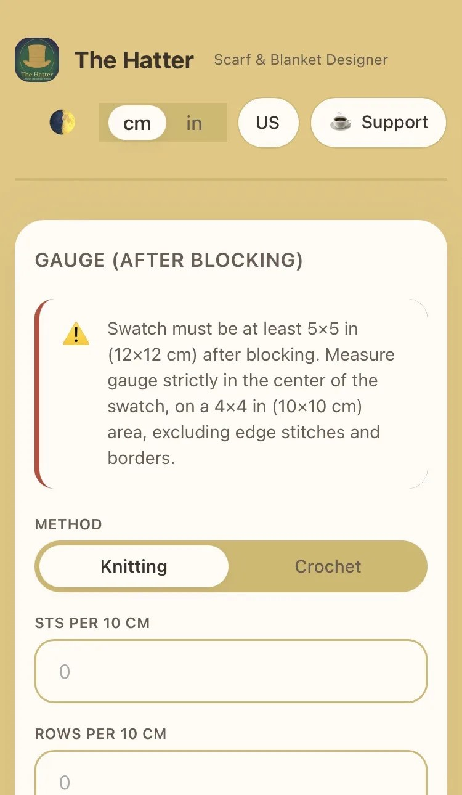
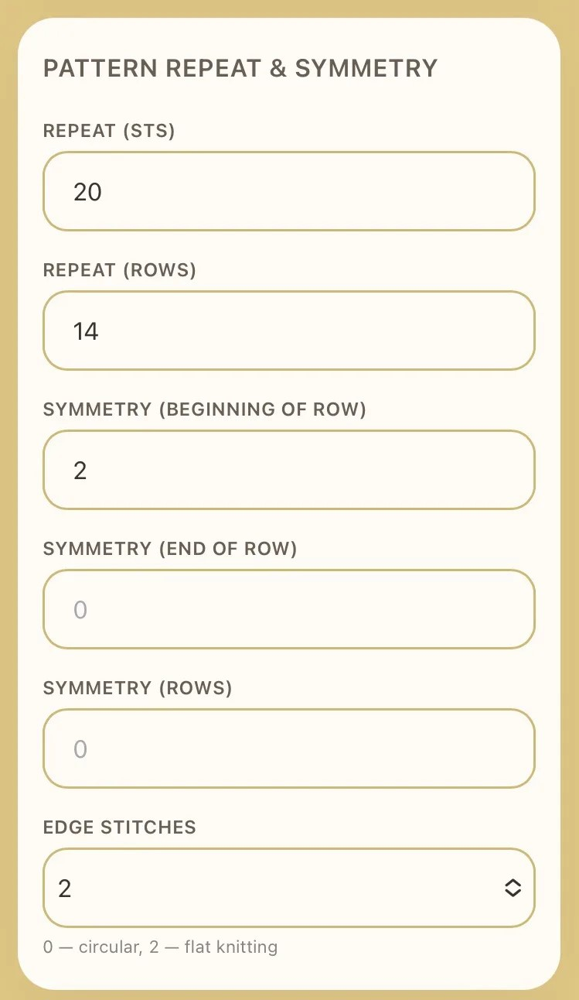
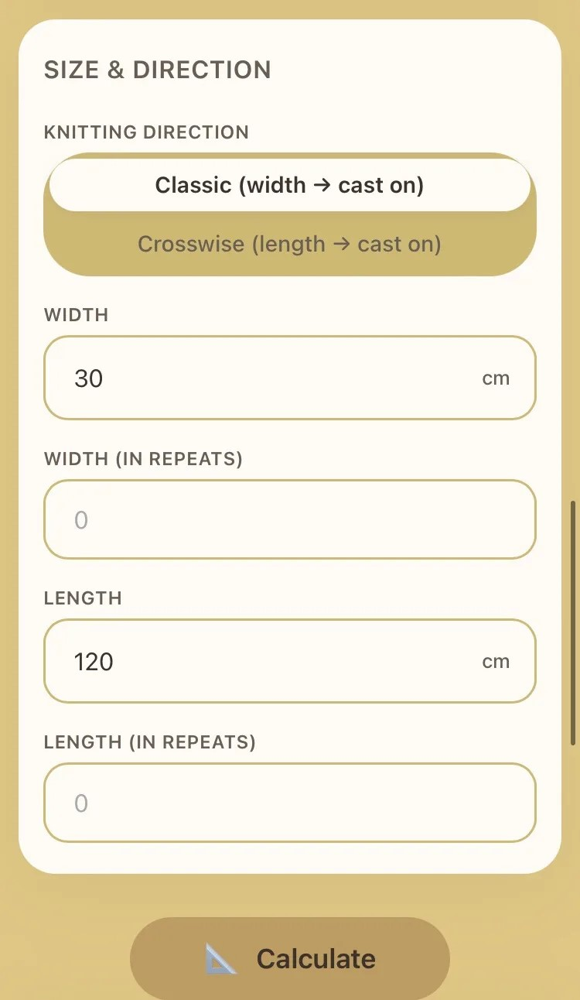
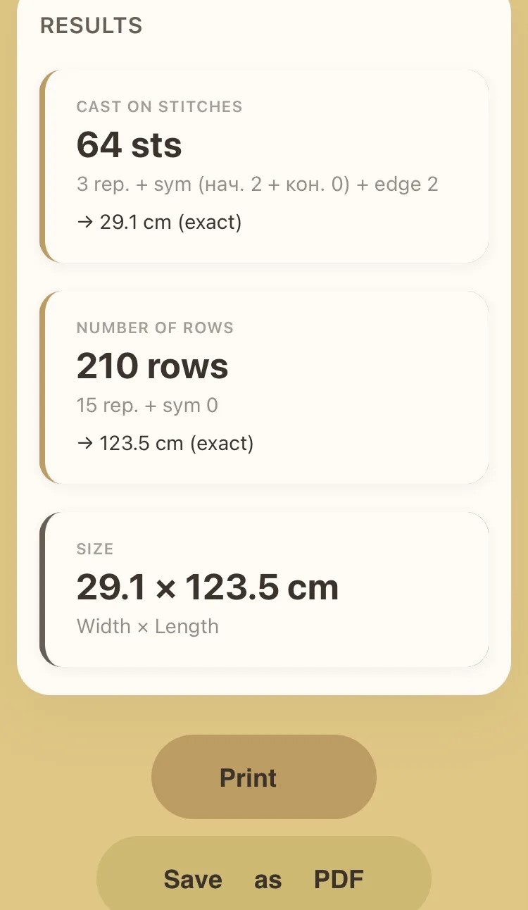
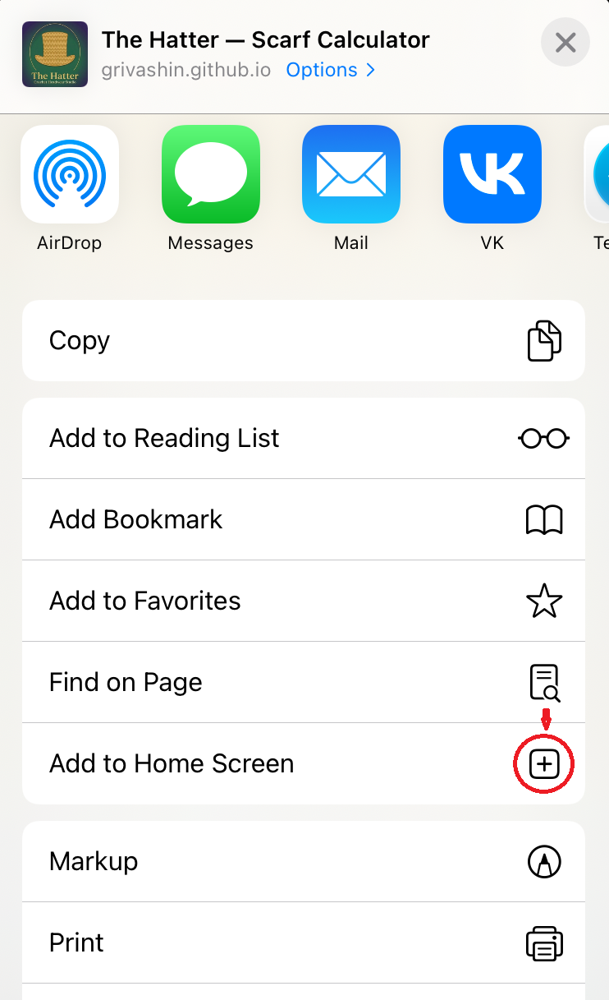
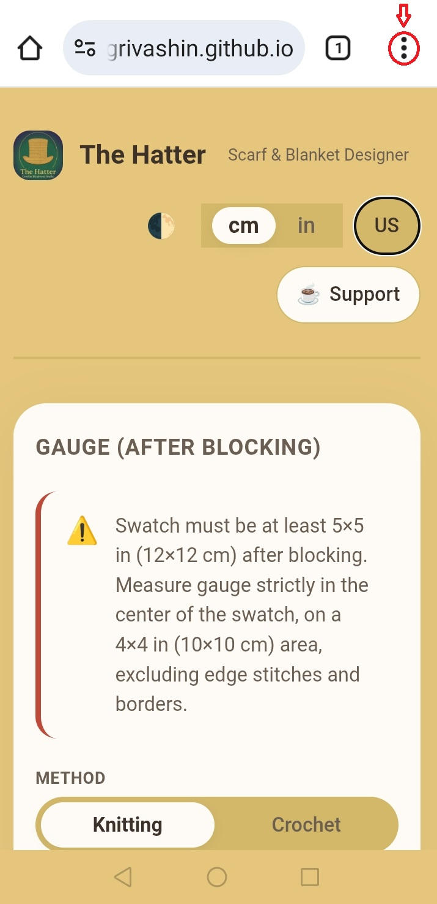
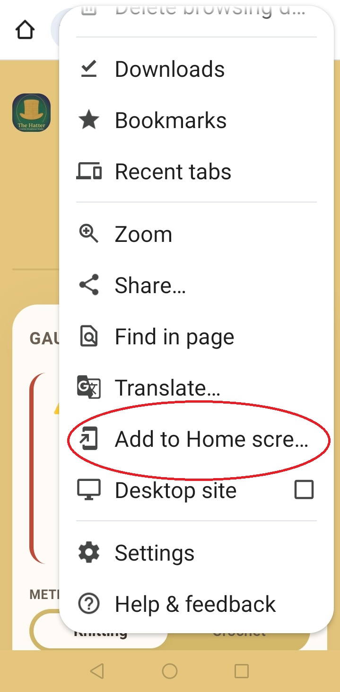
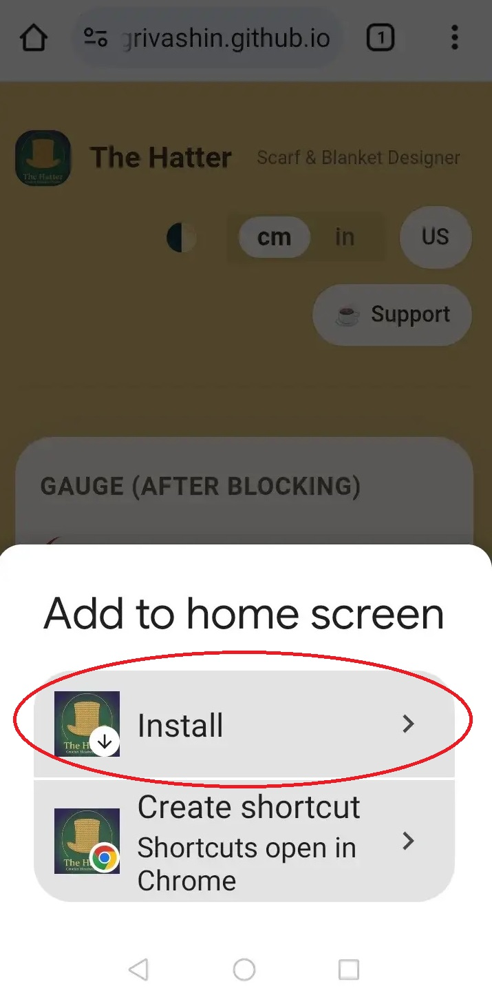

User Manual
«The Hatter: Scarf and Blanket Designer»
1. Introduction
Welcome to The Hatter — an intelligent web tool for precise calculation of knitted garment parameters. Originally designed for scarves and blankets, The Hatter has evolved into a universal calculator for any straight fabric. Now you can calculate with mathematical precision not only scarves and blankets but also oversized sweaters, ponchos, and straight‑fit cardigans that are knitted without complex armholes and neckline shaping.
The product is built on PWA (Progressive Web App) technology. This means it can be installed on your smartphone or tablet home screen with one click. After installation, it launches in full‑screen mode (without browser address bar), works instantly, and does not require searching for it online every time.
🔒 Privacy and security
All calculations are performed exclusively locally on your device. The calculator does not send or store any data you enter on servers. All processing stays in your browser or installed application. We do not use third‑party trackers, collect analytics, or request access to your personal information. Your projects remain completely private.
2. Key Features
- Accurate base calculation: Determines the number of cast‑on stitches and total rows based on your personal gauge after blocking.
- Smart pattern repeat adjustment: Automatically recalculates width and length, showing the number of full repeats so that the pattern is not cut off at edges.
- Flexible symmetry settings: Separate input for symmetry stitches at the beginning and end of the row, plus edge stitches.
- Adaptability to technique: Supports knitting (flat and circular) and crochet.
- PWA mode: Install on your home screen (iOS/Android) for instant full‑screen access like a native app.
- Global localization: Switch between metric (cm, m) and imperial (inches, yards) systems, and three interface languages: RU, US English, UK English.
- Export, save and print: Generate a print‑ready PDF of your calculations and print the results.
How to Use The Hatter Calculator
(with screenshots)
Step 1. Choose your tool and enter gauge
On the «Gauge (after blocking)» screen:

- Select tool – tap «Knitting» or «Crochet» (in the example, Knitting is selected).
- Enter gauge – two numbers:
- Stitches per 10 cm (in the example 22)
- Rows per 10 cm (in the example 17)
These numbers are obtained by measuring your swatch after blocking (washing/drying) strictly in the centre on a 10×10 cm area.
Step 2. Fill in pattern repeat and symmetry
On the «Pattern repeat & symmetry» screen:

- Repeat (stitches) – number of stitches in one repeat of the pattern. Example: 20.
- Repeat (rows) – number of rows in one repeat vertically. Example: 14.
- Symmetry (beginning of row) – stitches to add before the first repeat for symmetry. Example: 2.
- Symmetry (end of row) – stitches to add after the last repeat. Example: 0.
- Symmetry (rows) – how many rows to add after the last repeat of the pattern. Example: 0.
- Edge stitches (only for knitting):
- 0 – circular knitting (no edge stitches).
- 2 – flat knitting (classic method).
In the example, 2 (flat knitting) is chosen.
Step 3. Enter size and direction
On the «Size & direction» screen:

- Knitting direction – choose:
- Classic (width → cast on) – you cast on stitches for the width, rows are knitted for the length.
- Crosswise (length → cast on) – you cast on stitches for the length, rows are knitted for the width.
- Width – desired width of the finished item (in cm or inches). Example: 30 cm.
- Length – desired length. Example: 120 cm.
- Width (in repeats) and Length (in repeats) – can be filled if you want to specify size directly in repeats (fields synchronize). In the example they are empty (0).
Step 4. Press «Calculate» and check the results

After filling all fields, click the large «Calculate» button at the bottom. The calculator will show the number of cast‑on stitches, number of rows, and the final size with pattern repeat adjustment.
3. Extended Scenarios: Oversized and Straight Cut
The Hatter is ideal for creating modern oversized sweaters, pullovers and straight‑fit cardigans that are knitted in straight pieces without decreases/increases for armholes and neckline.
How to use:
- Decide on the desired Bust circumference of the finished garment (including ease, e.g. +15–20 cm for oversized fit). Enter this value in the «Width» field.
- Measure the desired Length from shoulder line to lower edge. Enter it in the «Length» field.
- The calculator will automatically adjust these dimensions to your pattern repeat, ensuring a coherent pattern across the whole fabric.
4. Installing on Your Device (PWA)
To have The Hatter always at hand while knitting, install it as an app. It takes 10 seconds and saves you from searching for it online every time.
For iOS users (iPhone / iPad):

Step 1: Tap «Share»

Step 2: Select «Add to Home Screen»
- Open the site in Safari.
- Tap the «Share» button (square with an arrow pointing up) at the bottom.
- Scroll down and select «Add to Home Screen».
- Tap «Add». Done! The Hatter icon will appear among your apps and open in full‑screen mode.
For Android users:

Step 1: Open browser menu

Step 2: Select «Install app»

Step 3: Confirm installation
- Open the site in Google Chrome.
- Tap the menu (three dots) in the top right corner.
- Select «Install app» or «Add to Home Screen».
- Confirm. The Hatter icon will be added to your home screen for instant launch without browser elements.
5. Support and Community Development
The Hatter is created by enthusiasts for enthusiasts. We constantly work on improving algorithms and adding new useful features.
If this tool has saved you time and helped you create the perfect project, you can support the development:
Support the project on Boosty via the «Support» button in the top right corner of the calculator.
Your contributions go directly to hosting, technical support, and development of new tools for knitters.
If you have any questions, suggestions, or wishes, please write to: thehatterapp@gmail.com
← Back to calculator